Prototype Review · V1 → V2
Harness Evolution V2
多工作空间与归因流程 · 原型变更报告
V2 没有另起一套设计语言：它从 plans/14-15-ui-prototype 完整拷贝后迭代，保留 V1 的顶栏、卡片、表格、执行流与自进化详情，只在身份、空间、总览、Session 查询和归因流程上做增量。这份报告用同尺寸截图说明“哪些没变、哪些变了、为什么变”。
分支 feat/ui-prototype-v2
基线 origin/main @ 1afda0d
日期 2026-11-10
原型 harness-evolution.html
数据 3 空间 · 21 Session · 43 bad case
7 / 7需求点已覆盖
4新增页面/页签：登录、总览、空间管理、鉴权
3改造：Session 列表、错误详情、自进化向导
0新增视觉体系 / 设计 token
01为什么 V2 继续沿用 V1，而不是重做
V2 的新需求主要是“权限、空间、数据入口、归因编排”，它们不应该迫使页面换一套视觉语言。V1 已经有一套适合排障/演化场景的紧凑亮色界面；V2 复用它，用户从 V1 迁移时不需要重新学习布局。
原样保留
- 56px 顶栏 + 页签下划线选中态、品牌 logo、右侧同步浮层
--bg #f4f5f7、12px 卡片、蓝/紫/橙/红语义色、13px 正文- Session 卡片、状态点、两条密度条、10 格统计条
- React Flow 家族树、问题卡、执行流选中联动
- 自进化 run-card、7 步 stepper、cluster/diff/eval/commit
- 启动向导 modal、条件摘要条、分页表格
只在必要处改动
- 顶栏增加工作空间切换器与用户菜单；多一个「总览」页签
- Session 默认 10 条，搜索从“实时过滤”改为“回车查询 root session ID”
- 错误详情左栏从平铺错误卡改为可折叠 bad case 组 + 归因子列表
- 自进化向导从 2 步扩展为 4 步：范围 → Session 关联 → 潜在 bad case → 归因预览
- 运行详情步骤从「筛选/聚类/归因」改为「范围/关联/潜在/归因」
- 新增登录、总览、空间管理；全部复用 V1 控件
V2 里没有出现第二套导航、第二套卡片或第二种主色。新增的登录页也只是把 V1 的亮色卡片放大，而不是改成营销落地页或深色后台。
02需求映射：7 个目标态落在哪里
| # | V2 目标 | 原型落点 | 证据 |
|---|
| 1 | 多用户登录，不开放注册，预留 Cookie/用户信息接入 | 登录页 4 个演示账号；唯一全局管理员；空间管理 → 鉴权接入（Cookie、登录/登出、用户映射、SSO 回调契约） | 登录页、鉴权接入截图 |
| 2 | 多工作空间；管理员管理空间与空间管理员 | 工作空间切换器；空间管理四个页签；创建空间时多选初始管理员；成员页可任命/撤销；可把自己设为空间管理员 | 空间管理截图 |
| 3 | 空间上报接口与 bad case 额度 | 每空间独立 POST /api/workspaces/{id}/bad-cases、凭据、额度、请求体示例；创建后可调额度；409 说明 | 上报接入截图 |
| 4 | 空间总览：object × 时间 × self/discovery，列表分页下钻 | 总览页：日/周/月、object_name 多选、self/discovery 堆叠、对象分布、组合筛选列表、点击行进入对应 bad case 问题描述 | 总览截图 |
| 5 | Session 默认 10 个；输入 session ID 回车重查 | 侧栏显示「最新 10 / 13」；输入 root session ID 回车命中老 Session；清空回车恢复 10 条；无命中空态 | Session 截图 |
| 6 | 归因进入自进化流程；对象关联、潜在策略、缓存 | 向导 4 步（关联 / 潜在各自分页）；详情 7 步；默认策略 = self ∪ 触发点在对象之后；自定义规则；缓存开关与复用/新增/非该对象统计 | 向导 2/3 步截图 |
| 7 | 错误详情：一个 bad case 多条归因，左栏可折叠 + 分页 | bad case 组折叠；每组归因子项按对象版本分页（2 条/页）；点击子项进入归因分析；未归因状态 | 错误详情截图 |
03Session 错误查看：同一套壳层，新增空间上下文与精确查询
V1 · Session 浏览器4 个会话 · 实时搜索
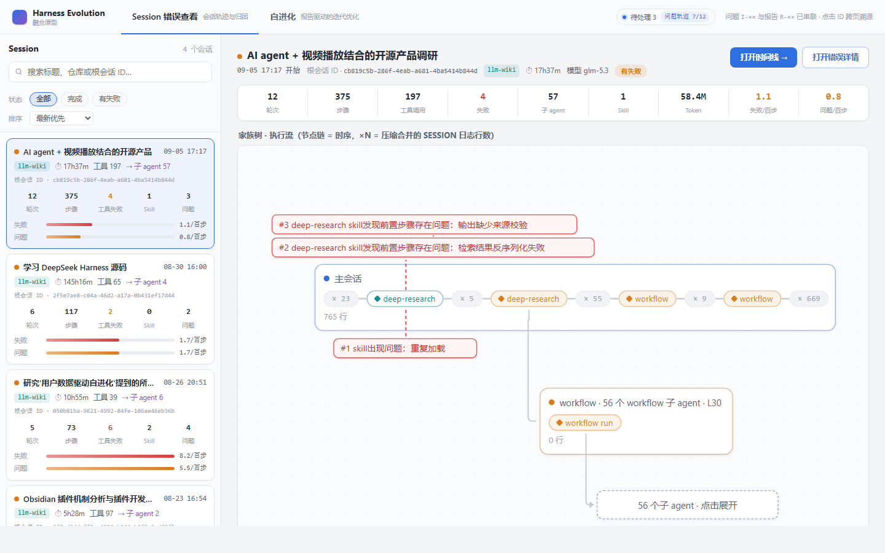
V1：无工作空间上下文；搜索框对标题/仓库/ID 实时过滤；4 个样例会话全量展示。
V2 · Session 错误查看最新 10 / 13 · 回车查询
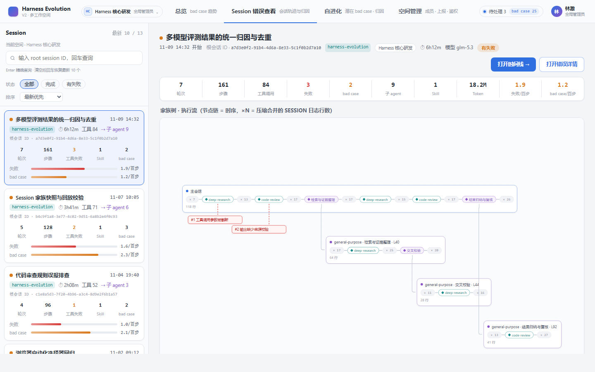
V2：顶栏出现工作空间与角色；侧栏明确「最新 10 / 13」；搜索改为 root session ID + Enter；卡片统计与密度条保持 V1。
1默认只查 10 个进入页面不再默认拉全量家族树；左侧只请求当前空间最新 10 个 root Session，标题显示「最新 10 / 总数」。选中后才加载概览与执行流。
2搜索是“查询”而不是“过滤”输入 root session ID（支持子串）后回车，左侧替换为命中结果并选中；清空再回车恢复最新 10 个。未命中时左右都显示空态，不保留旧选中。
3空间上下文可见侧栏显示当前空间；顶栏切换器会同步刷新 Session 列表、总览、自进化与空间管理，不把空间状态散落在各页面。
4问题 → bad case 文案统计条、卡片密度、列表标题统一为 bad case；底层仍是 V1 的 findings 数量与执行流锚点，便于迁移时一一对应。
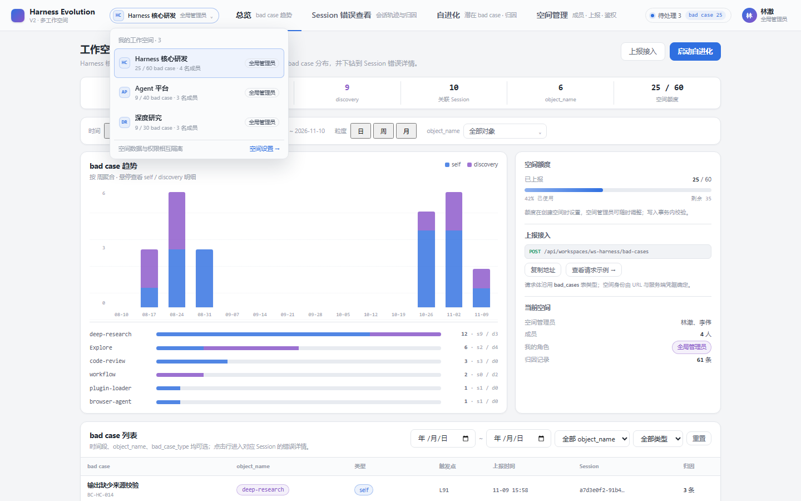
工作空间切换器：显示空间名、当前角色、bad case 使用量/额度与成员数；切换后所有页签共享同一空间上下文。
04错误详情：从“一个错误一个归因”到“一个 bad case 多条归因”
V1 · 错误详情I-/R- 双 ID · 单条分析
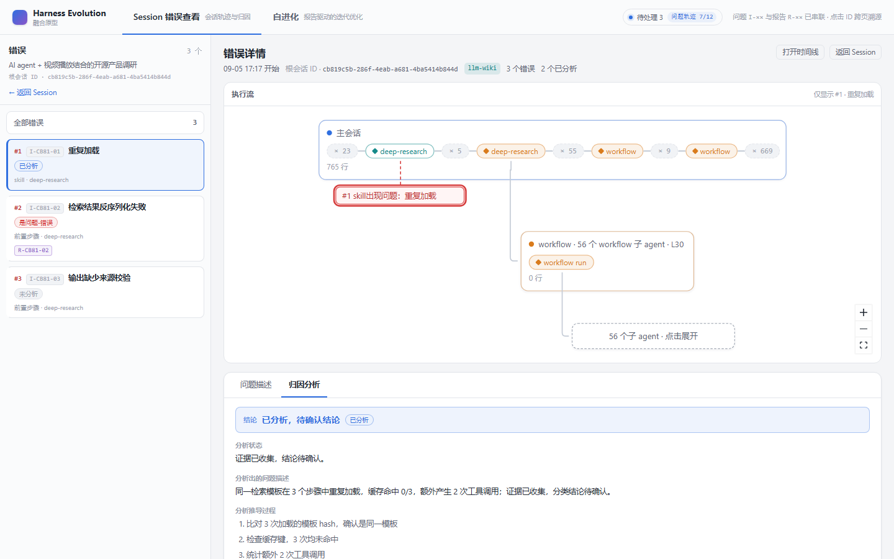
V1：左栏平铺错误卡；问题描述/归因分析两个 Tab；归因结论内嵌在 ERROR_META，一个错误只有一条。
V2 · 错误详情BC- ID · 多对象 · 折叠+分页
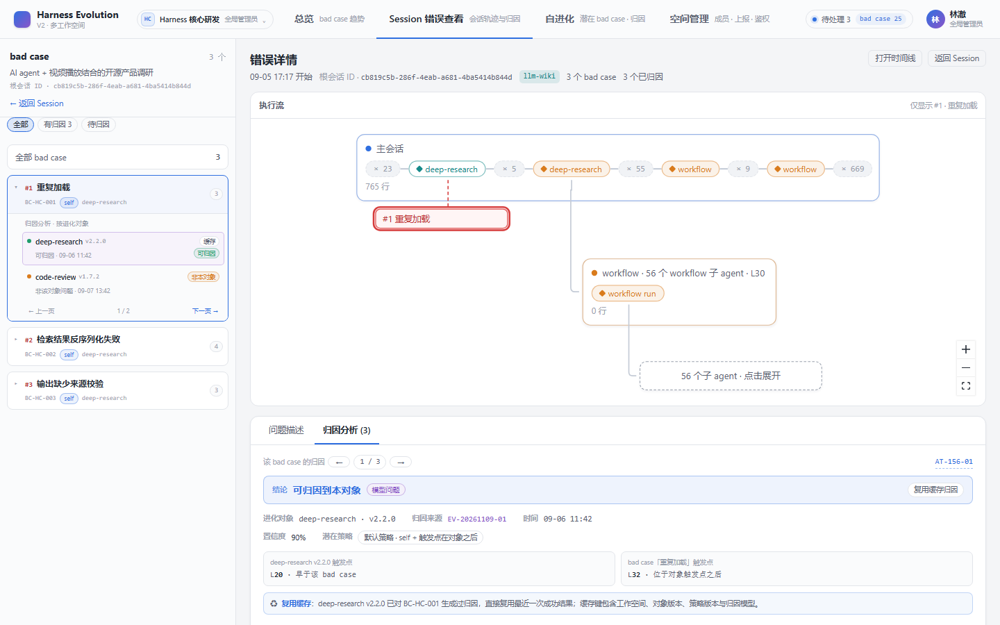
V2：左栏每个 bad case 可折叠，组内按「对象 · 版本」列归因并分页；选中子项直接进入该条归因分析；右侧仍保留执行流与双 Tab。
V2 错误详情全尺寸：左侧 bad case #1 展开 3 条归因（当前第 1–2 条），右侧“归因分析 (3)”展示对象版本、运行 ID、缓存来源与触发点对比。
左栏结构
- 父行：
#no、bad case ID、标题、object_name、self/discovery、归因数
- 展开：归因列表（2 条/页），显示对象版本、结论、时间、缓存标记
- 筛选：全部 / 有归因 / 待归因；没有归因的 case 显示「尚未归因」
右栏语义
- 点父行 →「问题描述」：问题现象、对象、触发点、上报时间、归因数量
- 点子项 →「归因分析」：结论、分类、对象版本、运行 ID、置信度、策略、触发点对比、缓存来源、推导
- 「非该对象问题」是对象版本级结论，不修改 bad case，也不影响其他对象
V2 · 问题描述从总览下钻后的默认 Tab
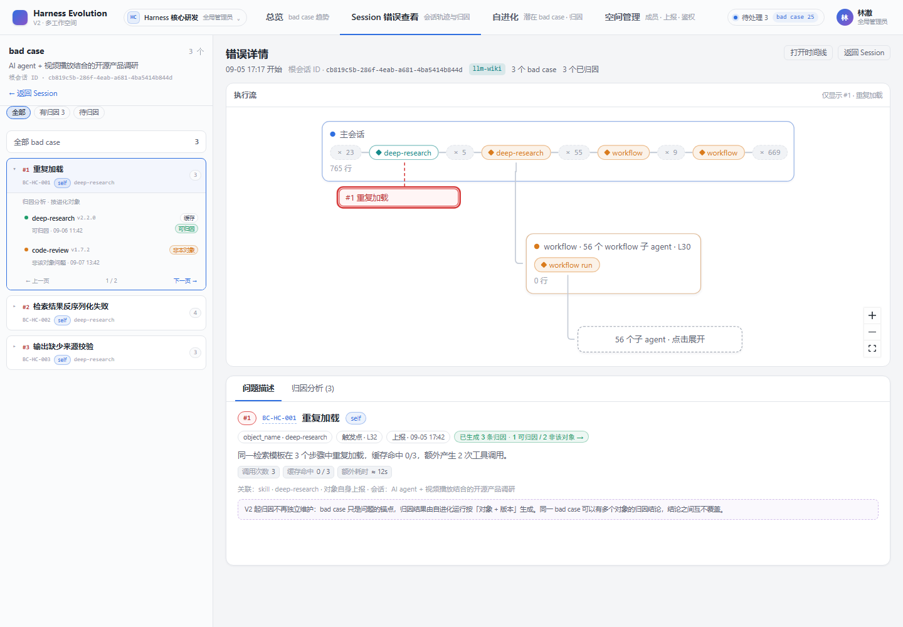
总览列表点击行进入该 Session，并自动选中对应 bad case 的问题描述。
V2 · 尚未归因归因在进化流程中生成
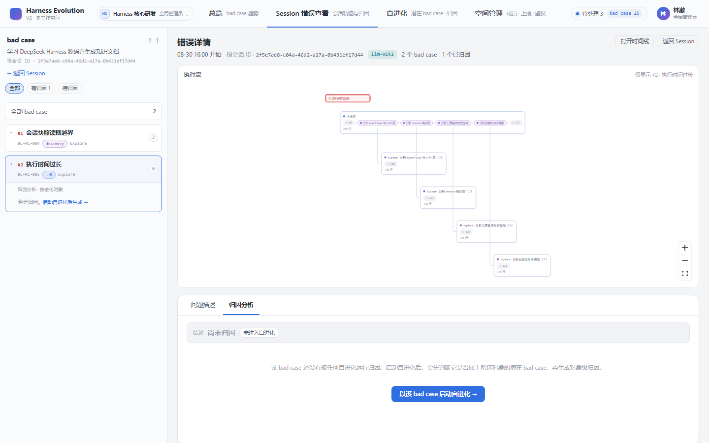
没有进入过自进化运行的 bad case 显示“尚未归因”，提供启动入口；不再伪造“未分析”结论。
05自进化：归因前移，向导与运行详情同步改版
1 选择范围对象 + 版本 + 时间段
2 Session 关联对象是否出现
3 潜在 bad caseself ∪ 触发点之后
4 对象归因可归因 / 非该对象 / 缓存
5 聚类与排序按类型聚类 · 严重度降序
6 迭代优化按簇 patch → eval → accept
7 终评best vs 初始
V1 · 启动向导对象/版本/时间段/模型 → 报告
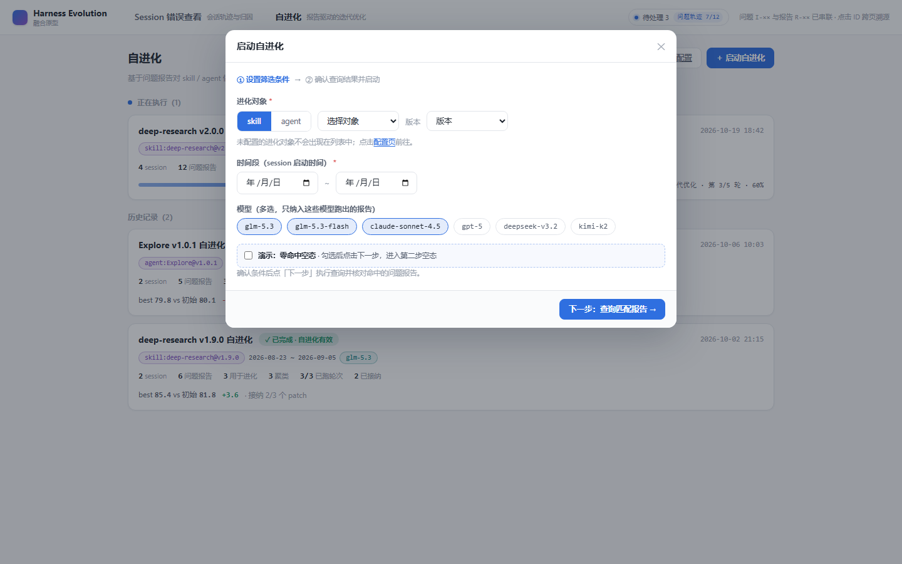
V1：筛选条件直接命中「问题报告」，归因发生在运行内部的第 3 步；输入没有 Session 关联与潜在策略概念。
V2 · 向导第 2 步Session 关联 · 分页
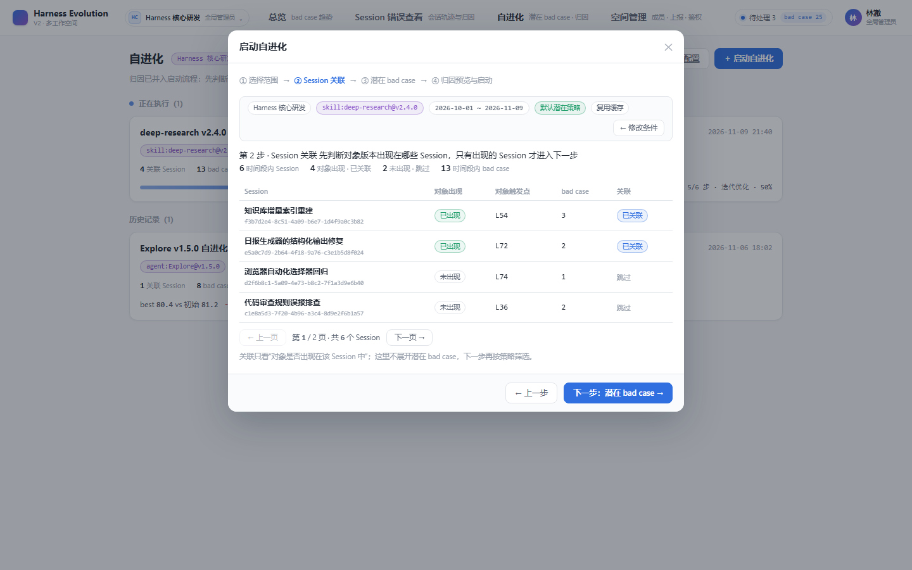
V2：先看关联 Session 数量与“对象出现/未出现”结果；表格分页（4 个/页），下一步才进入潜在 bad case。
V2 · 向导第 3 步潜在 bad case · 分页
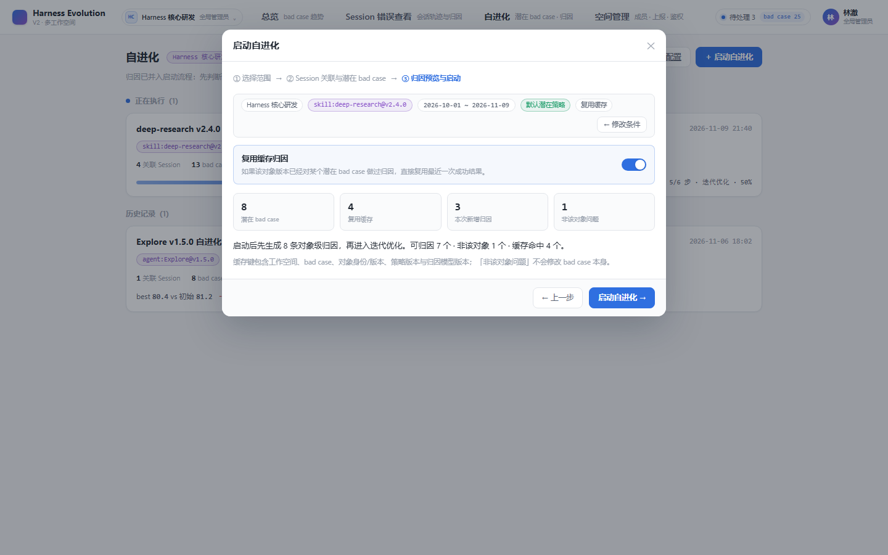
V2：单独看潜在 bad case 数量与明细，表格分页（5 个/页），显示 object_name、类型、触发点与来源 Session。
V2 · 向导第 4 步缓存 + 归因预览 + 启动
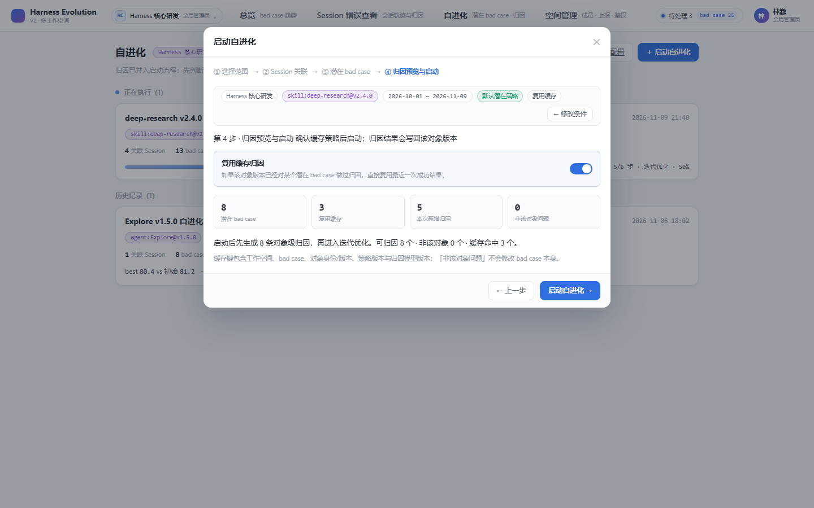
「复用缓存归因」开关；预览潜在 / 复用 / 新增 / 非该对象四类数量；缓存键包含空间、bad case、对象版本、策略与模型版本。
本次迭代把原第 2 步拆成两步：
第 2 步只看关联 Session（4 条/页），
第 3 步只看潜在 bad case（5 条/页）；归因预览移到第 4 步。运行详情在归因后新增
第 5 步聚类与严重度排序，迭代顺延到第 6 步。修改前后对照见
向导拆分截图 /
聚类步骤截图。
运行详情：把“为什么进入这次进化”讲清楚
V1 · 运行详情筛选 → 聚类 → 归因 → 迭代
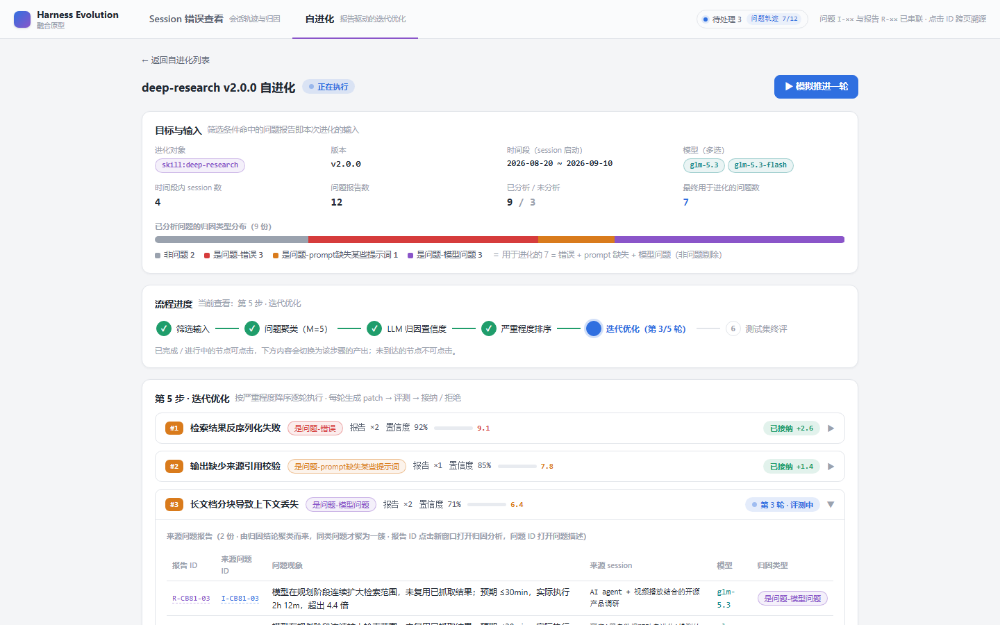
V1：信息面板以“问题报告数 / 已分析 / 用于进化”为主；来源是报告 ID。
V2 · 运行详情关联 → 潜在 → 归因 → 迭代
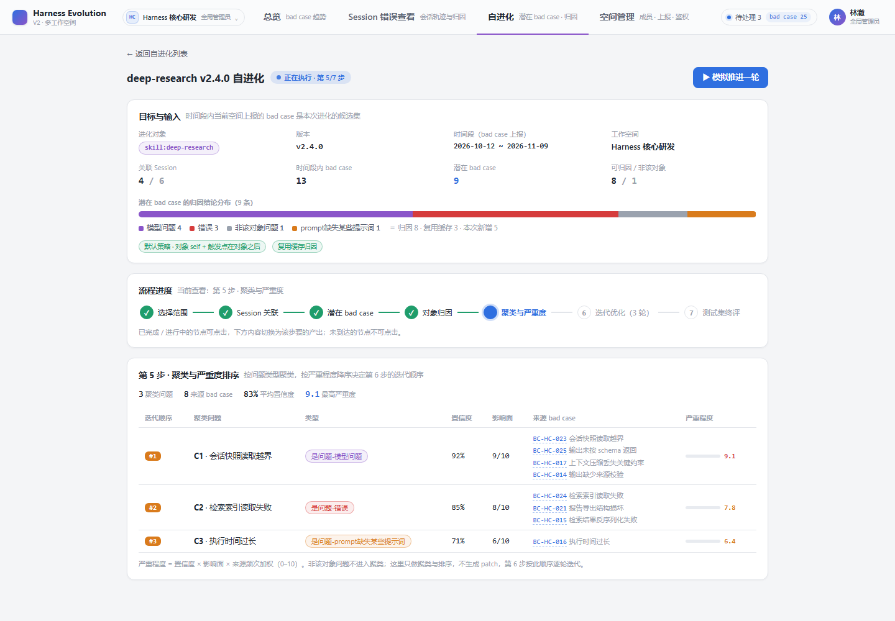
V2：信息面板显示关联 Session、时间段内 bad case、潜在 bad case、可归因/非该对象；第 3 步潜在表在 bad case 前显示关联 Session（标题 + 根会话 ID）；新增第 5 步聚类与严重度排序，迭代顺延到第 6 步；聚类来源改为 bad case 链接。
默认潜在策略
(object_name = target AND type = self) OR (bad_case.trigger_line > object.trigger_line)
即“对象自身 self 上报”并集“触发点在对象触发点之后”。不选/无命中时进入空态，不伪造候选。
缓存与结论边界
缓存命中只复用最近一次成功归因；“非该对象问题”仍然是一条归因结论，会写入集合，但不会修改 bad case，也不会阻止它成为其他对象的潜在 bad case。
06新增页面：登录、总览、空间管理
V2 · 登录唯一管理员 · 无注册入口
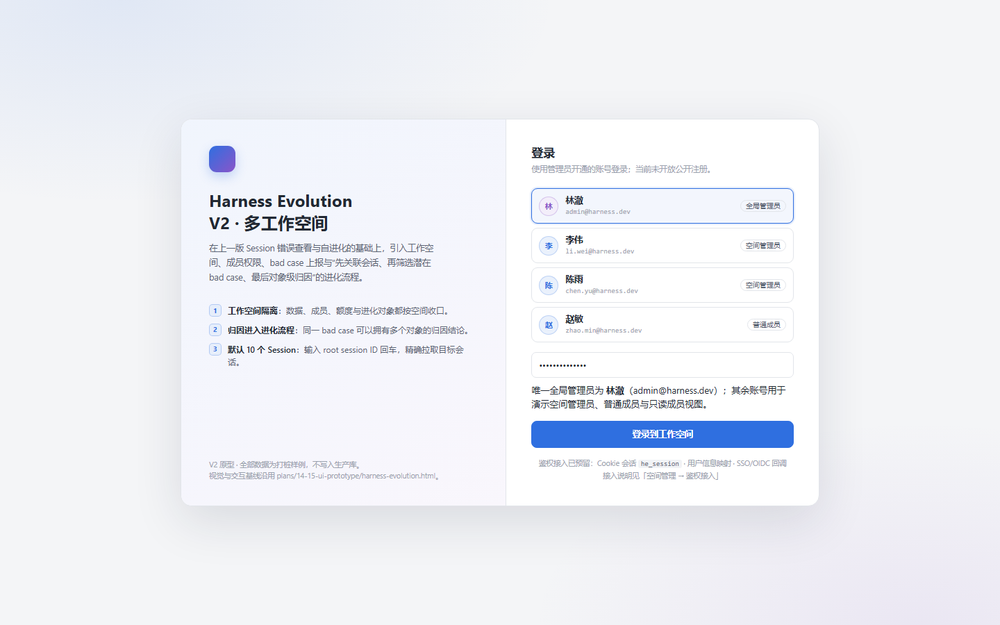
4 个演示账号；说明“账号由管理员开通”；底部展示 Cookie 会话、用户映射、SSO/OIDC 接入预留。
V2 · 工作空间总览object × 时间 × self/discovery
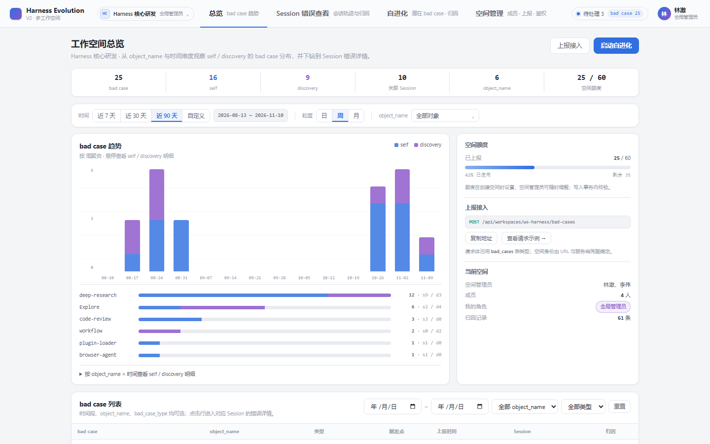
日/周/月、object_name 多选、堆叠柱、对象分布，以及可展开的 object_name × 时间明细矩阵；下方组合筛选列表支持分页并下钻到错误详情。
鉴权接入Cookie / SSO / 用户映射
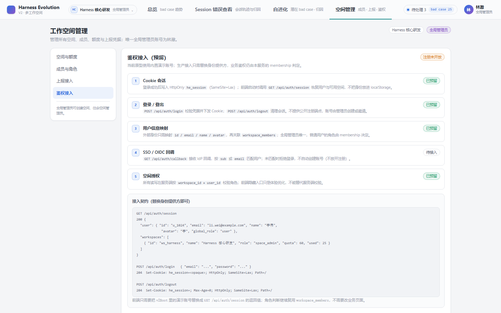
接入契约直接列出 GET /api/auth/session、登录/登出 Set-Cookie 与用户 workspaces 返回结构。
创建工作空间额度 + 多选管理员
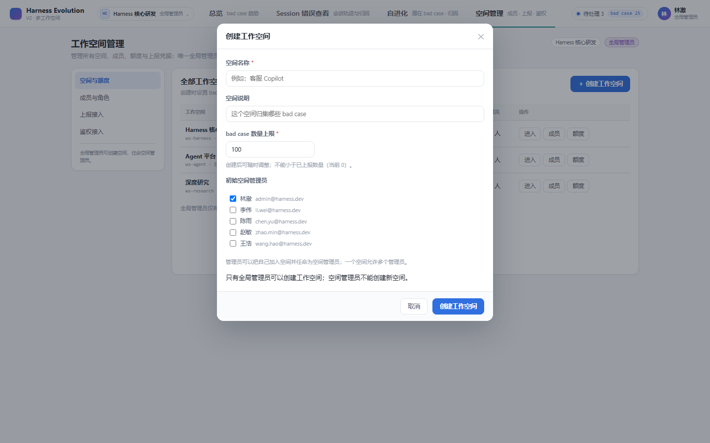
创建时设置 bad case 上限与初始空间管理员（可多选，包括自己）；创建后可调额度。
07角色视图：同一页面，按权限收口
空间管理员（李伟）当前空间管理
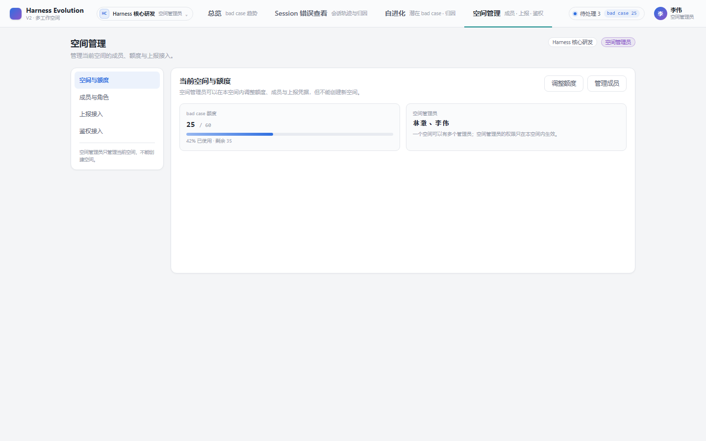
只能调整当前空间额度/成员/上报；不能创建新空间、不能授予空间管理员。
| 能力 | 全局管理员 | 空间管理员 | 成员 | 只读 |
|---|
| 创建空间 / 调整初始额度 | ✓ | — | — | — |
| 查看有权限空间 | ✓ | ✓ | ✓ | ✓ |
| 调整额度 / 上报凭据 | ✓ | ✓ | — | — |
| 添加成员 / 成员、只读 | ✓ | ✓ | — | — |
| 任命空间管理员 | ✓ | — | — | — |
| 配置对象 / 启动自进化 | ✓ | ✓ | — | — |
| 查看 Session / bad case / 归因 / 运行 | ✓ | ✓ | ✓ | ✓ |
08关键路径：从登录到一条归因
A · 空间总览下钻
- 登录 → 默认空间「Harness 核心研发」
- 总览选择近 90 天、object_name 多选（或不选 = 全部）
- 查看 self/discovery 堆叠趋势与对象分布
- 列表按时间段 / object_name / bad_case_type 组合筛选
- 点行 → Session 错误详情，自动选中该 bad case 的问题描述
B · 精确查 Session
- 进入 Session 页，默认最新 10 / 13
- 输入
cb819c5b… 或 ID 子串，回车
- 左侧替换为命中的 1 个 Session 并选中
- 打开错误详情 → 选择 bad case → 展开归因
- 清空输入再回车，恢复最新 10 条
C · 启动自进化
- 选择对象 + 版本 + bad case 时间段
- 查看对象出现在哪些 Session、对象触发点
- 默认/自定义潜在策略 → 预览潜在 bad case
- 选择是否复用缓存 → 查看复用/新增/非该对象
- 启动 → 运行详情第 4 步查看对象级归因
D · 管理空间与上报
- 全局管理员创建工作空间，设置额度与初始管理员
- 空间管理员调整额度、添加成员/只读
- 上报接入复制空间专属地址与凭据
- POST body 使用 bad_cases 类型；额度内写入
- 鉴权接入替换成 Cookie/SSO 用户源
09数据与迁移边界
新增/扩展的数据
workspaces：名称、额度、状态、创建信息workspace_members：空间 + 用户 + 角色（唯一约束）workspace_ingest_credentials：凭据摘要、轮换/撤销bad_cases：增加 workspace_id 与触发点索引bad_case_attributions：bad case + 对象版本 + 策略/模型版本 + 结论 + 缓存来源evolution_run_candidates：关联 Session、潜在 case、触发点、命中原因
兼容与迁移顺序
- 空间底座：membership、workspace_id、默认空间迁移
- 上报与总览：额度、统计、分页 API
- Session 与错误详情：默认 10、精确查询、多归因集合
- 自进化编排：Session 关联、潜在策略、缓存键
- 权限收口：所有读写服务端校验；前端入口只做体验
兼容风险：V1 的 I-/R- 双 ID 深链、无空间上下文的 /sessions/**、以及单条 ERROR_META 归因都需要适配层。建议保留旧深链参数解析，解析到 bad case 后再重定向到带 workspace 的新 URL；历史归因写入默认对象版本，读侧逐步切到归因集合。
10验收与渲染检查
1440 × 900本报告截图视口
0核心页面 console error
7 / 7需求点可点击验证
3工作空间样例
已实际点击验证
- 登录 / 切换演示身份 / 退出；手动登录后恢复深链
- 空间切换；总览多选 object、粒度、分页、行下钻
- Session 默认 10/13、ID 回车命中、无命中空态
- 错误详情折叠、归因子项分页/切换、未归因态
- 自进化向导 4 步、缓存开关、启动生成运行
- 创建空间、调额度、添加成员、把自己设为管理员
- 上报地址/凭据复制、curl 示例、鉴权接入说明
原型边界
- 真实鉴权、持久化、统计 SQL、归因算法与 SSO 回调未实现
- 权限只做前端护栏，生产必须服务端按空间再校验
- 执行流依赖 CDN 的 React / React Flow；离线时仅树图不可用
- 数据为打桩；额度、成员、归因状态在刷新后回到样例值
复现：直接打开 harness-evolution.html（默认登录页），或使用 ?u=admin&page=overview 等演示参数；设计说明见 design-v2.md，页面入口见 index.html。